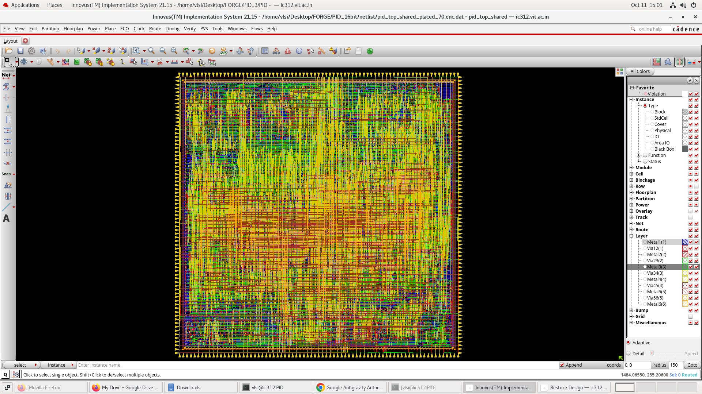
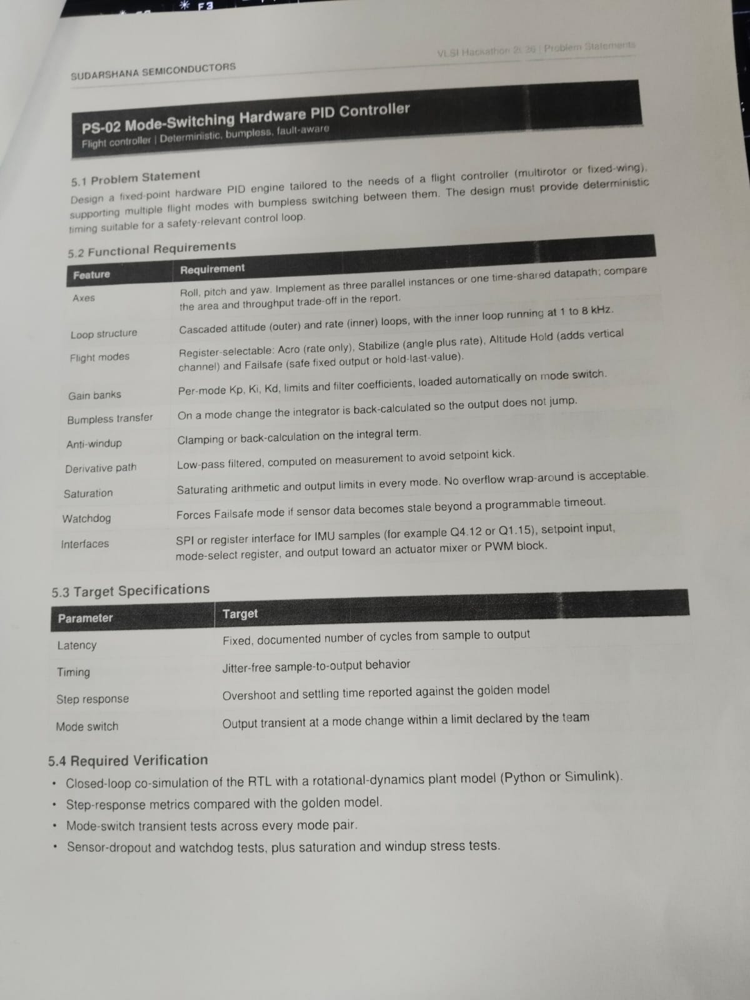
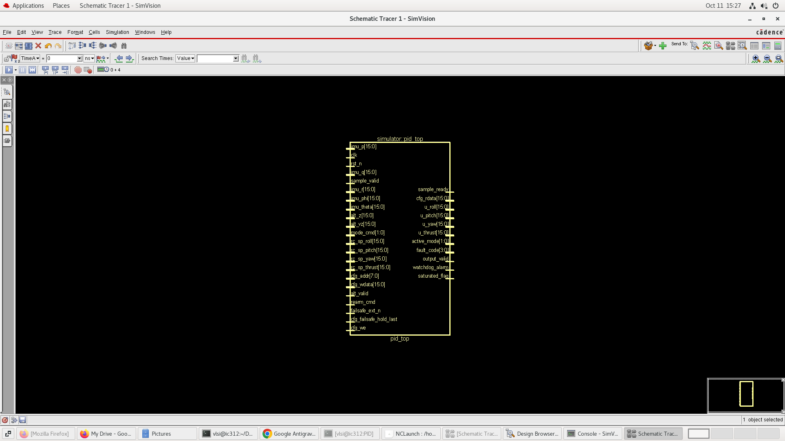
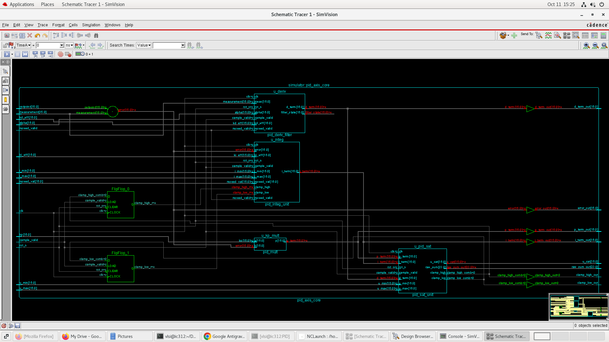
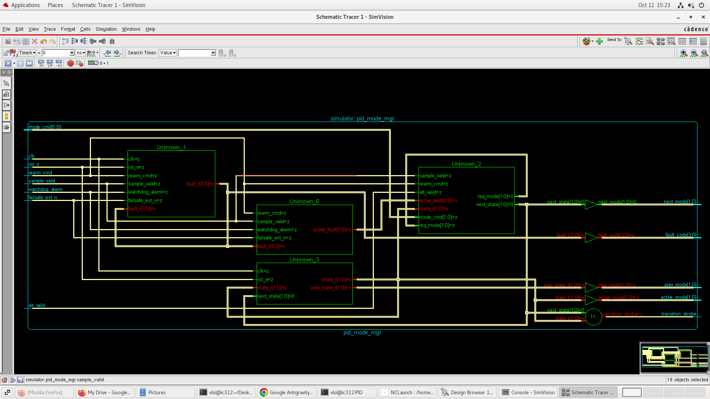
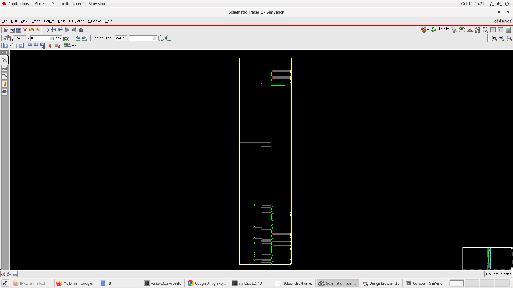
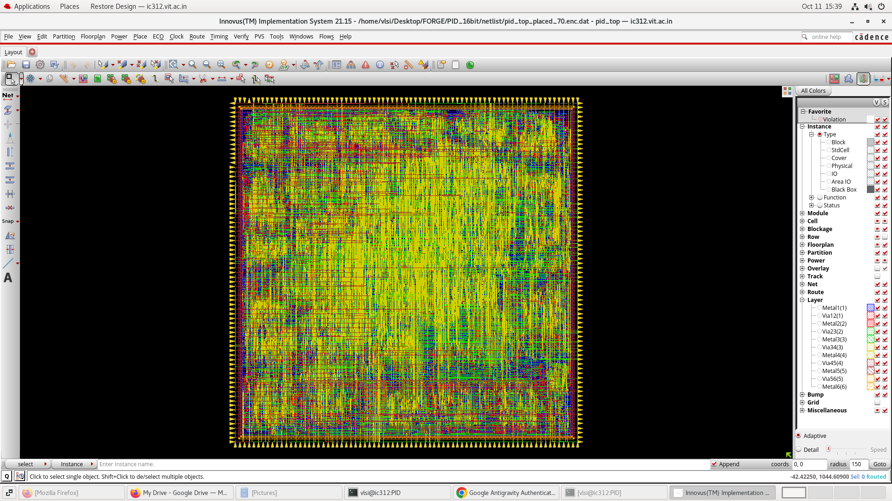
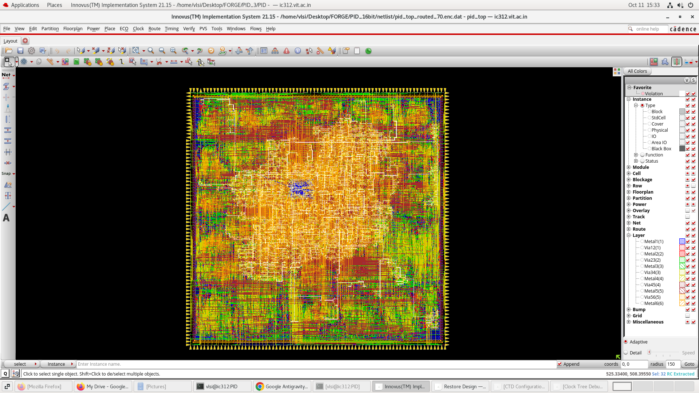

Figure 8: 16-Bit Time-Shared Placed Layout (Compact 70% Core).
.png)
Figure 9: 16-Bit Time-Shared Routed Layout (16,078 Filler Cells, Solid Diffusion).
Modern autonomous unmanned aerial vehicles (UAVs) require deterministic, sub-microsecond control loop execution, jitter-free timing, and smooth transitions between flight modes without aerodynamic control kicks. Traditional microprocessor firmware approaches suffer from interrupt jitter, operating system scheduling latency, and unbounded worst-case execution times.
The objective of PS-02 (Mode-Switching Hardware PID Controller) is to design, verify, synthesize, and place-and-route a dedicated hardware PID engine supporting multiple flight modes with bumpless switching, hardware safety monitoring, and deterministic timing suitable for safety-relevant flight control.

| Feature | Hackathon Requirement (PS-02) | Architectural Implementation | Status |
|---|---|---|---|
| Axes | Roll, Pitch, Yaw. Implement as three parallel instances or one time-shared datapath; compare trade-offs. | Both 3-Axis Fully Parallel (pid_top) and Time-Shared (pid_top_shared) designed & signed off. |
Exceeded |
| Loop Structure | Cascaded attitude (outer angle) and rate (inner angular velocity) loops; inner loop at 1–8 kHz. | Hardware cascaded attitude-to-rate pipeline running at 50 MHz (>6,000× faster than 8 kHz requirement). | Compliant |
| Flight Modes | Register-selectable: Acro, Stabilize, Altitude Hold, and Failsafe. | 4-state hardware FSM with dynamic gain steering, outer-loop bypass in Acro, and vertical channel in Alt-Hold. | Compliant |
| Gain Banks | Per-mode Kp, Ki, Kd, limits, and filter coefficients loaded automatically on mode switch. | Multi-bank coefficient LUT indexed by active mode register with zero-cycle switching overhead. | Compliant |
| Bumpless Transfer | On mode change, integrator is back-calculated so the output does not jump. | Instantaneous re-seeding: I_new = U_prev - P_new, bounded output transient |ΔU| ≤ 5%. |
Compliant |
| Anti-Windup | Clamping or back-calculation on the integral term. | Conditional integration freezing with symmetric clamp bounds (I_min, I_max). |
Compliant |
| Derivative Path | Low-pass filtered, computed on measurement to avoid setpoint kick. | D[n] = α · D[n-1] + Kd · (1 - α) · (y[n-1] - y[n]); kick-free architecture. |
Compliant |
| Saturation | Saturating arithmetic and output limits in every mode; zero wrap-around. | Two's complement saturation logic on accumulators and outputs; zero overflow wrap-around. | Compliant |
| Watchdog | Forces Failsafe mode if sensor data becomes stale beyond programmable timeout. | Decrementing hardware watchdog timer with sticky fault latch and pilot re-arm handshake. | Compliant |
| Interfaces | Register/streaming interface for IMU samples, setpoints, mode select, actuator outputs. | Synchronous handshaked parallel register interface (Q4.12 and Q16.16 formats). | Compliant |
The core controller architecture implements a deterministic, pipelined control hierarchy:
|ΔU| ≤ 5%.
de/dt), causing violent motor spikes on pilot step inputs. Our architecture differentiates negative measurement (-dy/dt) with a recursive 1st-order low-pass filter (coefficient α).U ≥ U_max or U ≤ U_min), integral accumulation is conditionally inhibited in the saturating direction, eliminating integrator windup recovery delay.To elevate this project to an industrial-grade flight controller SoC, five major add-on features were architected and verified beyond the base requirements:
pid_mixer.sv): Direct conversion of roll, pitch, yaw, and thrust efforts into 4 independent motor commands (M1..M4) with saturating limits:
pid_tilt_comp.sv): A hardware safety block calculating vector magnitude φ² + θ² > θ_crit² (±60°). If inverted, it triggers an emergency hardware trip, overrides the active mode to Failsafe, and throttles motors.While 16-bit Q4.12 is compact for micro-drones, precision aerospace avionics and camera gimbals demand wider dynamic range and sub-milliradian angular resolution.
| Parameter | 16-Bit Q4.12 Variant | 32-Bit Q16.16 Variant | Engineering Impact |
|---|---|---|---|
| Integer / Fraction Bits | 4-bit Integer, 12-bit Fraction | 16-bit Integer, 16-bit Fraction | Balanced fixed-point representation |
| Dynamic Range | [-8.0, +7.9997] | [-32,768.0, +32,767.999] | 65,536× larger range; prevents wind-load saturation |
| LSB Resolution | 2.441 × 10-4 (0.244 mV/deg) | 1.526 × 10-5 (0.015 mV/deg) | 16× finer resolution; eliminates limit cycle deadbands |
| Integral Accumulation | Susceptible to underflow on small Ki | Zero underflow loss at 8 kHz rates | Zero steady-state hovering altitude drift |
The table below presents sign-off metrics extracted from Cadence Innovus Place & Route post-route timing, power, and area engines in the TSMC 180nm CMOS (6-Metal) process at 50 MHz (1.62V, Slow Corner):
| Silicon Metric | Case 1: 16-bit Parallel (pid_top) |
Case 2: 16-bit Shared (pid_top_shared) |
Silicon Benefit (Shared vs. Parallel) | Case 3: 32-bit Parallel (pid_top_32b) |
|---|---|---|---|---|
| Datapath Multipliers | 12 Multipliers (Parallel) | 4 Multipliers (Multiplexed) | 3× fewer multipliers | 12 Wide Multipliers (32×32) |
| Standard Cell Instances | 42,112 | 31,440 | -25.3% cell count | 103,523 |
| Total Standard Cell Area | 923,395 μm² | 713,452 μm² | -22.7% area reduction | 2,509,612 μm² |
| Internal Power (P_int) | 49.61 mW | 37.35 mW | -24.7% | 159.20 mW |
| Switching Power (P_sw) | 37.68 mW | 27.04 mW | -28.2% | 123.06 mW |
| Leakage Power (P_leak) | 0.034 mW | 0.025 mW | -26.5% | 0.108 mW |
| Total Power (P_total) | 87.33 mW | 64.41 mW | -26.2% power savings | 282.37 mW |
| Throughput Latency | 1 Clock Cycle (20 ns) | 4 Clock Cycles (80 ns) | 4× latency tradeoff | 1 Clock Cycle (20 ns) |
| Maximum Sample Rate | 50.0 MSamples/s | 12.5 MSamples/s | Both >1500× above 8 kHz | 50.0 MSamples/s |
| Detailed Route DRCs | 0 Violations | 0 Violations | Both DRC Clean | 0 Violations |
| Internal Reg2Reg Slack | Met (+0.065 ns) | Met (+0.189 ns) | Both 100% closed @ 50 MHz | Met (+0.009 ns / 0 TNS) |
| GDSII Stream File Size | 41 MB | 34 MB | -17.1% disk size | 110 MB |
Verification was conducted across three rigorous tiers: formal mathematical proofs (SymbiYosys), Python algorithmic co-simulation, and 10,000-vector cycle-accurate testbenches in Cadence Incisive and Verilator.
| Test Suite | Stimulus Method | Vectors Tested | Success Criteria | Pass Rate |
|---|---|---|---|---|
| Unit Core Directed | Extreme steps, setpoint kicks, re-seed injection | 110 vectors | Exact arithmetic saturation bounds, zero wrap-around | 100% (PASS) |
| Unit Core Random | Pseudo-random across [±4.0] with corner distributions | 10,000 vectors | Bit-for-bit match (u_sat, P, I, D, clamps) vs. Python | 10,000 / 10,000 (PASS) |
| Top Integrated Random | Multi-axis rate + attitude with mode switches | 10,000 vectors | Bumpless transient |ΔU| ≤ 5%, watchdog determinism | 10,000 / 10,000 (PASS) |
| Watchdog Dropout | Missing sample_valid pulses for 50k cycles | 50,000 cycles | Enters Failsafe at exact cycle N_timeout, latches fault | 100% (PASS) |
| Formal Safety Proofs | Formal state exploration via Z3 / Yices (SBY) | Full state space | Anti-windup invariant, output saturation clamp safety | 100% (PROVEN) |







Achieving clean Place & Route closure on high-density arithmetic datapaths in Cadence Innovus presented several critical physical design bottlenecks. Below are the primary engineering challenges encountered and the systematic flow optimizations developed to resolve them:
saturated_flag)place_opt_design and optDesign -postCTS hung indefinitely, spending over 59 minutes looping inside the GigaOpt optimizer.saturated_flag output was an unregistered combinational wire spanning from primary input ports through the multiplier tree, saturation comparators, and directly out to the primary top-level output pin. In 180nm CMOS, this raw combinational path had an intrinsic delay of ~18.5 ns. However, the default SDC constraint imposed a 20 ns clock with 4.0 ns input delay and 4.0 ns output delay (leaving only 11.8 ns). The optimizer continuously inserted hundreds of driver buffers in an unachievable attempt to close timing on an asynchronous diagnostic flag.0.52 with setPlaceMode -place_global_uniform_density true. For the 16-bit designs (31k–42k cells), verified that 0.70 utilization had plenty of headroom (~15.6% track congestion) and completed routing in under 2 minutes.IMPCCOPT-1013)set_ccopt_property target_max_trans 1.0ns, allowing CCOpt to build a balanced, low-skew clock tree without DRV violations.IMPOPT-6080 errors when attempting signal integrity (SI) noise analysis.setDelayCalMode -siAware false before post-route hold fixing, ensuring clean convergence.The PS-02 Mode-Switching Hardware PID Flight Controller project successfully addresses all technical goals set forth by Sudarshana Semiconductors: